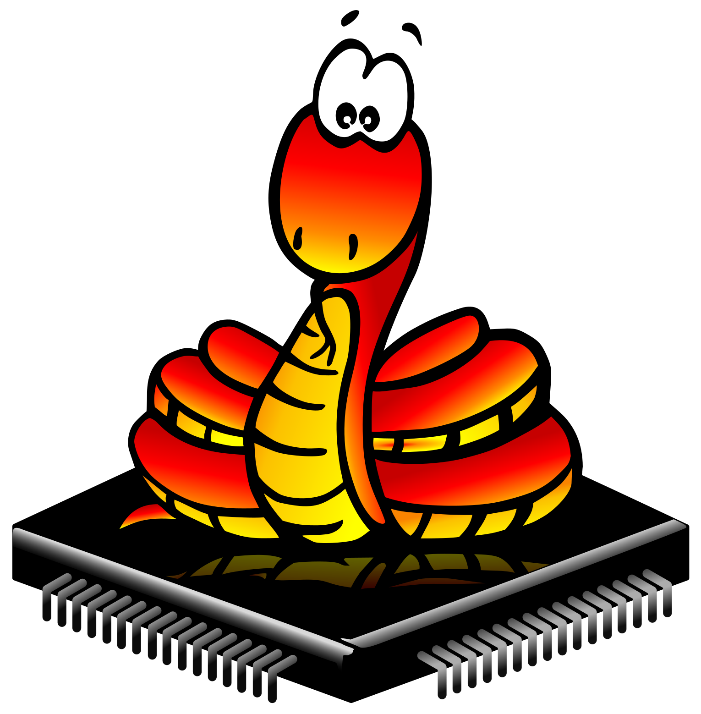

EXISTE VIDA MÁS ALLÁ DE ARDUINO
(Y ESTÁ LLENA DE SERPIENTES)

upip)MicroPython is a lean and efficient implementation of the Python 3 programming language that includes a small subset of the Python standard library and is optimised to run on microcontrollers and in constrained environments.
upip)micropython-...unix)import upip upip.install('micropython-am2320')
micropython -m upip install micropython-am2320
from machine import Pin p = Pin(0, Pin.OUT, value=0) p.value(1) p.value(0) p.on() p.off() p2 = Pin(2, mode=Pin.IN, pull=Pin.PULL_UP) p2.irq(handler=lambda x: print(x.value()), trigger=Pin.IRQ_FALLING | Pin.IRQ_RISING)
ESP8266 / ESP32:
from machine import Pin, PWM servo = PWM(Pin(4), freq=50) servo.duty(50)
PyBoard (Software PWM):
from pyb import Pin, Timer tim = Timer(2, freq=50) ch = tim.channel(1, Timer.PWM, pin=Pin('X1')) ch.pulse_width_percent(50)
Servo tradicional:
from pyb import Servo servo = Servo(1) servo.angle(45) servo.angle(-45, 5000)
Servo de rotación continua:
from pyb import Servo servo = Servo(1) servo.speed(50) servo.speed(0, 5000)
import machine import Pin, I2C addr = 28 reg_read = 5 reg_write = 8 i2c = I2C(scl=Pin(5), sda=Pin(4)) i2c.scan() i2c.writeto_mem(addr, reg_write, b'\x00') print(i2c.readfrom_mem(addr, reg_read, 2))
import pyb from time import sleep_us from machine import Pin, time_pulse_us trigger = Pin(pyb.Pin.board.X3, mode=Pin.OUT, pull=None) trigger.off() echo = Pin(pyb.Pin.board.X4, mode=Pin.IN, pull=None) trigger.on() sleep_us(10) trigger.off() time_pulse = time_pulse_us(echo, 1) # Divide the duration of the pulse by 2 (round-trip) and then # divide it by 29 us/cm (speed of sound = ~340 m/s) dist = (time_pulse / 2) / 29 # cm
boot.py
import pyb pyb.usb_mode('VCP+HID') pyb.main('main.py')
main.py
import pyb switch = pyb.Switch() accel = pyb.Accel() hid = pyb.USB_HID() while not switch(): hid.send((0, accel.x(), accel.y(), 0)) pyb.delay(20)
Conectar a un AP:
import network sta = network.WLAN(network.STA_IF) sta.active(True) sta.connect('ACM', 'PatataFrita') sta.ifconfig(('10.0.0.2', '255.255.255.0', '10.0.0.1', '8.8.8.8'))
Crear un AP:
import network ap = network.WLAN(network.AP_IF) ap.active(True) ap.config(essid='ACM', password='PatataFrita', channel=3, authmode=network.AUTH_WPA2_PSK, mac=b'\xC0\xC1\xD0\xFA\xBA\xDA')
@micropython.native y @micropython.viperdef test(): millis = pyb.millis endTime = millis() + 10000 count = 0 while millis() < endTime: count += 1 print("Count: ", count)
r0@micropython.asm_thumb def asm_add(r0, r1): add(r0, r0, r1) print(asm_add(1, 2))
echo "Tu queja" > /dev/null¡Muchas gracias a todos por venir!